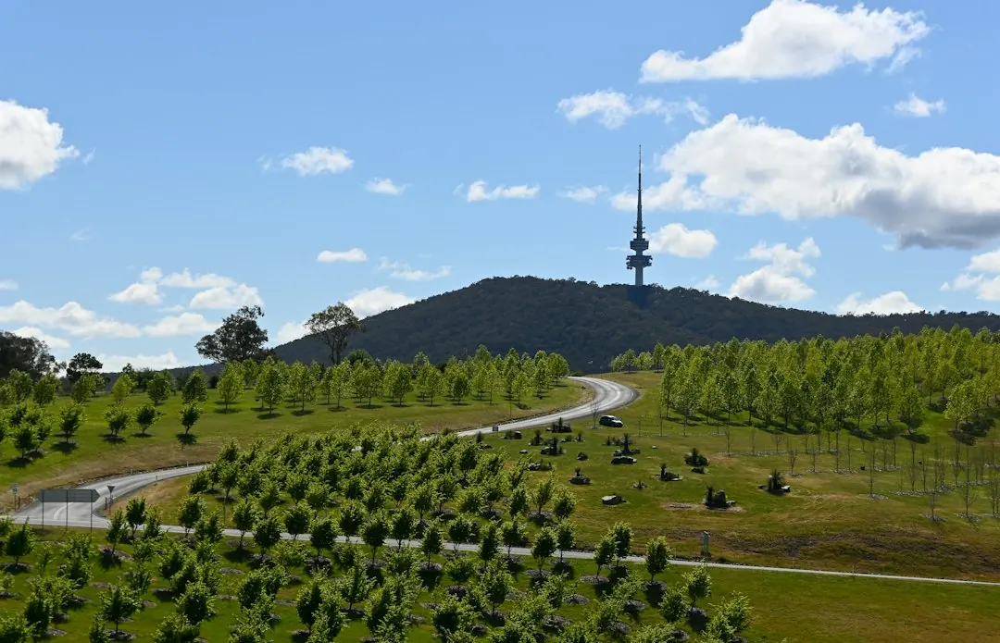

Start with measured site information before selecting a retaining wall system. Note maximum retained height, wider cut and fill, nearby loads, water paths, boundaries and access. Canberra projects may involve separate building approval and development approval checks. Eight pathways are outlined, including concrete sleepers, masonry, stone, timber, gabions, engineered work, repairs and replacement. The suitable direction depends on geometry, drainage, loads, footprint and access.
For homeowners researching retaining wall approvals canberra, the useful starting point is a measured record of height, ground levels, loads, drainage, boundaries and access before comparing wall systems.
Retaining Wall Approvals Canberra Explained
The Retaining Wall Canberra guide places geometry, loads, water and access before material selection. Begin with the maximum retained height, then describe the wider cut and fill relationship. A single height taken at the tallest point may not explain a sloping block.
Use wide photographs from both ends to show the level change. Add close views of movement, cracking, decay, washout or persistent wetness, and note what sits above the retained soil, such as a house bench, driveway, paving, garden bed or nearby structure.
The written record should also identify boundary position, neighbouring ground levels, street access, machinery access and possible spoil movement. These observations give a professional a usable starting brief without turning homeowner measurements into a structural design.
Why Canberra context changes the question
Established inner south gardens may contain older walls approaching the end of their service life. Weston Creek, Belconnen and Tuggeranong include house benches cut into hillsides, while Gungahlin and Molonglo Valley contain blocks shaped by larger civil earthworks. Existing levels can therefore be part of the issue being assessed.
An older wall may be affected by age, or by later changes around it. A redirected downpipe, new paving, raised garden bed or irrigation line can alter how water reaches retained soil. A newer estate boundary may need to work around subdivision levels, easements or a neighbour's ground.
Frosty winters, dry periods and short intense storm bursts are identified as relevant local conditions. A history of wetting, drying, movement or washout belongs in the enquiry because it may change the drainage and repair questions.
A copyable first enquiry
Use one short brief for each written response. Replace the brackets with observations from the property:
- Project: new wall, repair, stabilisation or replacement.
- Location: [suburb or site description], with [boundary or neighbouring ground detail].
- Height and levels: maximum retained height [ ], wider cut and fill [ ].
- Loads: [house, driveway, paving, garden bed, structure or none noted] above or near the retained soil.
- Water: [downpipes, irrigation, surface flow, wetness, washout or no issue observed].
- Condition: [lean, cracking, decay, movement or other visible change], first noticed [ ].
- Access: street to work area [ ], with machinery and spoil constraints [ ].
Ask the respondent to state the proposed system, drainage arrangement, excavation assumptions, access requirements and unresolved approval questions. Also ask whether the condition suggests repair, stabilisation or replacement, and what information must come from a qualified designer or certifier.
Compare systems by constraint
Concrete sleeper and post and panel systems may suit straight or stepped residential walls when embedment, handling access, transitions, loads and drainage are considered together. Segmental block and reinforced masonry require attention to geometry, footing or reinforced soil requirements, footprint and finish.
Natural stone may suit a sloping garden or older terrace where bearing, footprint and machinery access are adequate. Timber can be considered for appropriate lower terraces, alongside durability, moisture exposure, fixings, drainage and future replacement. Gabions require a suitable footprint and specified foundation, basket, stone and filter details.
A nearby driveway or structure changes the load question. Restricted access changes excavation, handling and spoil removal. Water behind the wall makes drainage coordination part of the main scope. The useful comparison is therefore not the wall face alone, but the recorded site condition and the work needed to answer it.
Keep approvals and professional roles distinct
Canberra work should be checked against building approval and development approval pathways separately. Ask which pathway is relevant to the proposed height, location, boundary, nearby structure and other site changes. A material recommendation is not an approval answer.
Homeowners can document dimensions, photographs, symptoms, water paths and access. Qualified professionals determine design, construction details, certification and the response to significant loads, boundaries or nearby structures. Ask who is responsible for each part and which assumptions remain unresolved.
For an additional comparison of wall types and site questions, see this separate retaining wall options overview. A useful written response connects the observed facts to the proposed work.
- Measure the levels. Record maximum retained height and the wider cut and fill relationship.
- Capture the context. Use wide photographs, then note visible movement, cracking, decay, washout or wetness.
- Complete the enquiry brief. Add loads, water paths, boundaries, access and the requested project type.
- Request defined responsibilities. Ask for the proposed system, drainage, approval questions, design role and certification role.
| Site condition | Question to resolve | Possible direction |
|---|---|---|
| New level change | What are the height, loads, water paths and access constraints? | System comparison and coordinated design |
| Movement or washout | What caused the change, and is repair or replacement justified? | Cause led assessment |
| Boundary or nearby structure | Which approval, design and certification information is required? | Approval ready coordination |
Common questions
What information should accompany a first enquiry? Include maximum retained height, wider cut and fill, nearby loads, water paths, boundaries, access, photographs and any visible movement, cracking, decay or washout.
Are building approval and development approval the same pathway? The Canberra guide keeps them separate. Ask which pathway applies to the proposed wall, its location and the surrounding site conditions.
Which wall system suits every Canberra property? No universal system is identified. Concrete sleepers, masonry, stone, timber, gabions, engineered work, repair or replacement depend on geometry, loads, water, footprint and access.
What should happen when an existing wall has moved? Request a cause led assessment covering movement, decay, washout or cracking, followed by a defined repair, stabilisation or replacement scope.
This guide covers Canberra site observations, wall pathway comparisons and questions for approval, design, drainage and repair discussions.